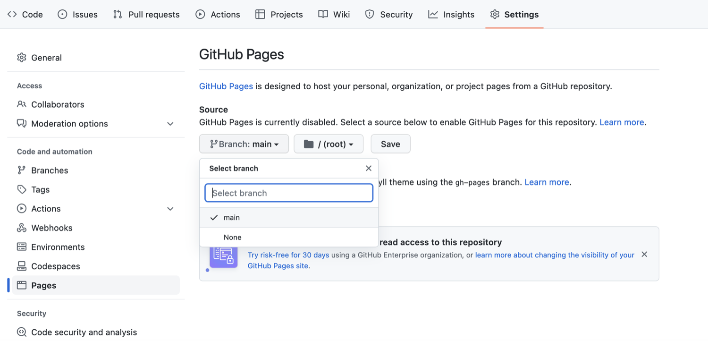
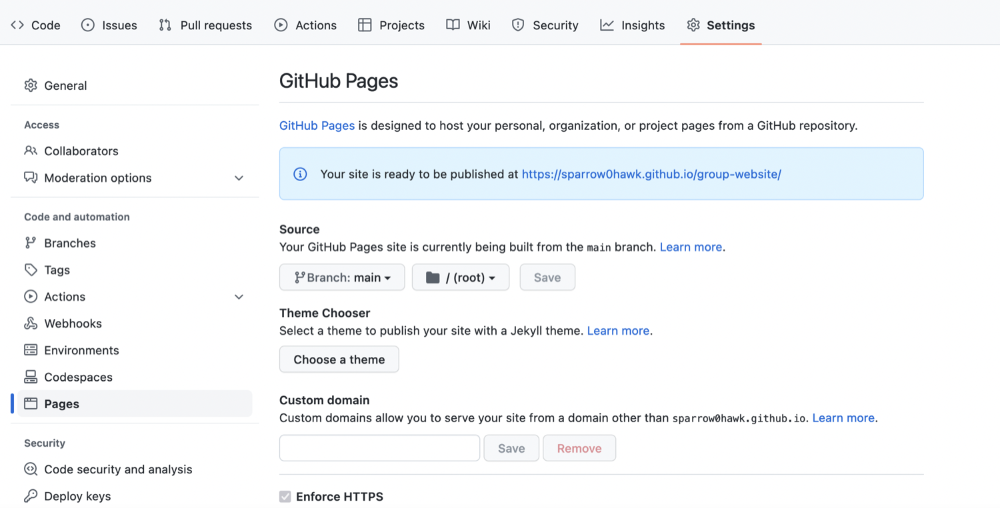

“How do I publish my page or a website on the Web via GitHub?”
Objectives
“Publish on the Web with GitHub Pages”
GitHub has a service for making content available online called
GitHub Pages.
Publishing a Website With GitHub Pages
GitHub
Pages is a free website hosting service by GitHub that takes files
(Markdown, HTML, CSS, JavaScript, etc.) from your GitHub repository
which is configured as a website, optionally runs the files through a
build process, combines them and publishes them as a website. Any
changes you do to the files in your website’s GitHub repository will be
rendered live in the website.
There are other services available to create and publish websites but
one of the main advantages of GitHub Pages is that you can version
control your website and therefore keep track of all your changes. This
is particularly helpful for collaborating on a project website. GitLab, Codeberg, Sourcehut and BitBucket offer similar services.
Let’s continue from the GitHub repository we have created in the
previous episode. One important file you should already have is
README.md, which will become the homepage of your project
website.
Enabling GitHub Pages
In order to tell GitHub that your repository contains a website that
needs rendering you need to configure GitHub Pages settings. You can do
so from your repository’s Settings page, as explained
below.
You may have noticed that when we created our repository in previous
episode, by default GitHub created a branch called main and
stored our files there. We now need to tell GitHub Pages that this
branch contains our website files.
What Is a Branch?
You may have never heard about Git branches and wonder what they are.
A branch is one version of your project (the files in your repository)
that can contain its own set of commits - you can have many branches
(versions) of your repository. The default branch automatically created
with a new github repository is called main.
Click on the repository’s Settings tab (the one with
the little cog/gear icon) as shown on the figure below:
Repository ‘Settings’ button in GitHub
interface
On the menu on the left hand side, click on
Pages
Select ‘Pages’ tab in repository settings
You will see that the GitHub Pages settings are currently
disabled. Select branch main to tell GitHub which branch to
use as a source and click Save to enable GitHub Pages for
this repository.

Set default branch for the website in repository
settings
The link to your repository’s website will appear in the
highlighted box above. If you click the link - your default browser will
open and show your project website. If this does not happen, you should
manually open your favourite web browser and paste the URL.

URL where the project website will be published
by GitHub Pages
It may take a while (from a few seconds to a few minutes) for
GitHub to compile your website (depending on GitHub’s availability and
the complexity of your website) and it may not become visible
immediately. You will know it is ready when the link appears in green
box with a “tick” in front of the web address (as shown in the figure
below).
Project website URL - indication of a successful
build
Once ready, you should see the contents of the
README.md file that we created earlier, rendered as a
website.
Our first website rendered by GitHub and showing
the contents of README
Using Branch gh-pages for
Websites
By convention, GitHub Pages uses branch called gh-pages
to look for the website content. By creating a branch with that name,
you implicitly tell GitHub that you want your content published and you
do not need to configure GitHub Pages in Settings. Once you
create gh-pages from your current branch (typically
main, created by default when you created the repository),
you can then choose to delete the other branch to avoid any confusion
about where your content is stored.
Either of the above two approaches to turning a repository to a
website will give you the same result - the gh-pages
approach is perhaps more common as it favours convention over
configuration.
Understanding GitHub Pages’ URLs
You may have noticed a slightly strange URL for your website
appearing in that green box with a “tick” in front of it. This URL was
generated by GitHub Pages and is not random. It is formatted as ‘https://GITHUB_USERNAME.github.io/REPOSITORY_NAME’ and
is formed by appending:
your GitHub username or organisation name under which the repository
is created (GITHUB_USERNAME)
‘.github.io/’ (GitHub’s web hosting domain)
the repository name (REPOSITORY_NAME)
Because the repository name is unique within one’s personal or
organisational GitHub account - this naming convention gives us a way of
neatly creating Web addresses for any GitHub repository without any
conflicts.
On the right hand side of your repository on GitHub, you can see the
details of your repository under ‘About’. It is good practice to update
your repository details with a brief description. This is also a place
where you can put your repository’s Web URL (as not everyone will have
access to your repository’s Settings to find it) and add
descriptive topics or tags about the content or technologies used in
your repository or project.
You can edit the details of your repository by clicking on the little
cog/gear button as shown on the figure below.
About section of a repository - edit repository
details
By doing this, you add a link to the repository’s website on your
repository’s landing page and anyone (including yourself) can access it
quickly when visiting your GitHub repository.
Key Points
“GitHub Pages is a static site hosting service that takes files in
various formats (Markdown, HTML, CSS, JavaScript, etc.) straight from a
repository on GitHub, builds them into a website, and publishes them on
the Web”
“By convention, if you create a branch called gh-pages
in your repository, it will automatically be published as a website by
GitHub”
“You can configure any branch of a repository to be used for website
(it does not have to be gh-pages)”
 Repository ‘Settings’ button in GitHub interface
Repository ‘Settings’ button in GitHub interface Select ‘Pages’ tab in repository settings
Select ‘Pages’ tab in repository settings Project website URL - indication of a successful build
Project website URL - indication of a successful build Our first website rendered by GitHub and showing the contents of README
Our first website rendered by GitHub and showing the contents of README